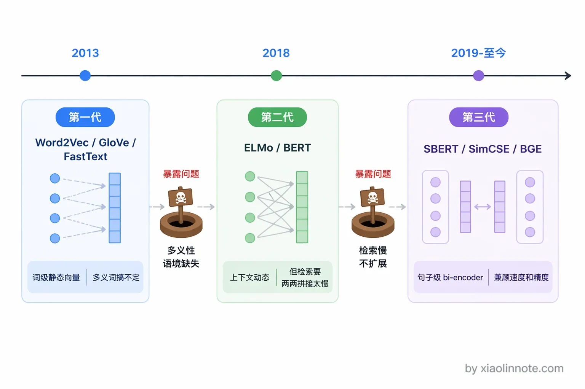
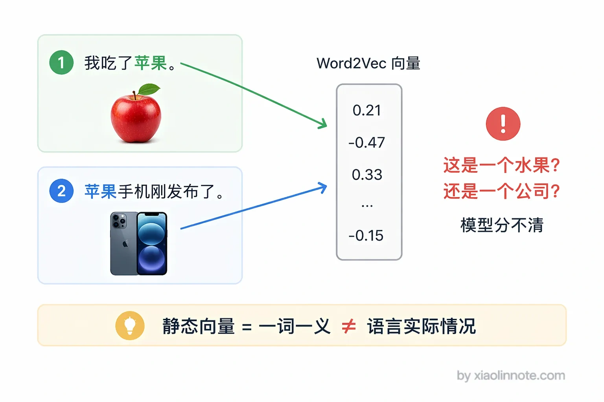
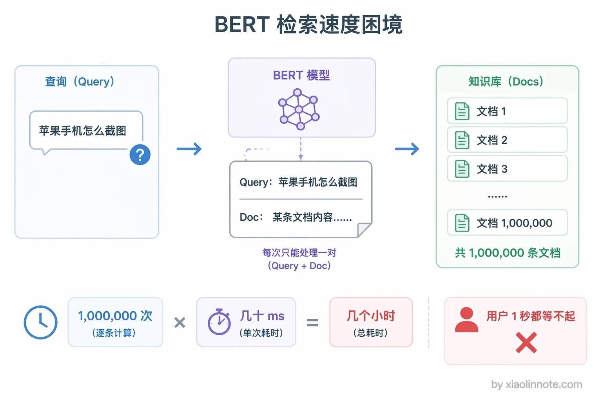
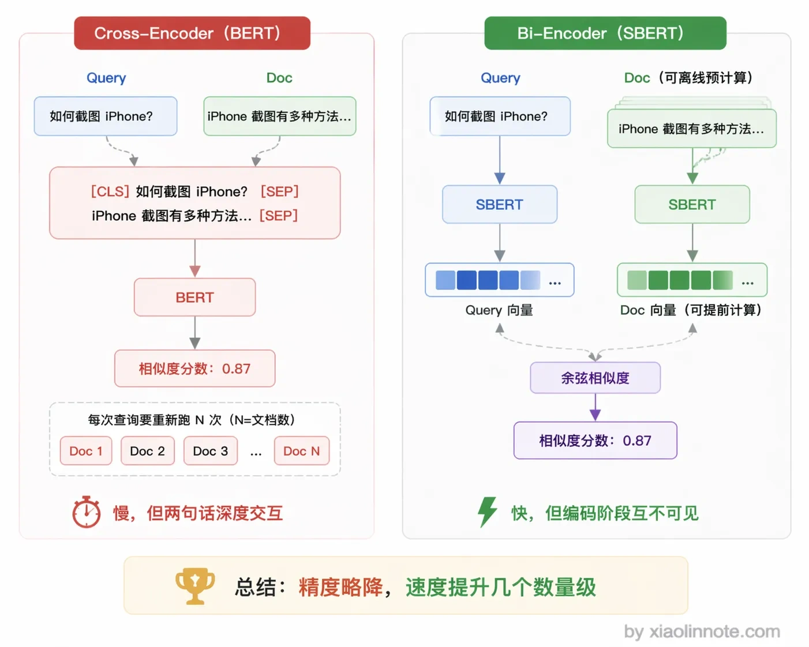
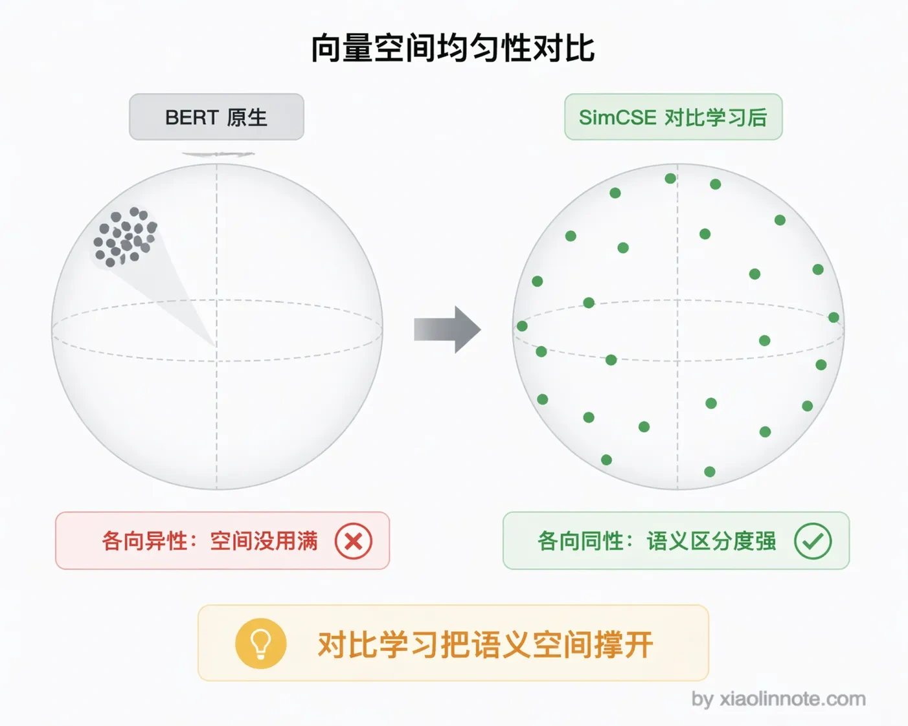

Embedding 有哪几种算法你了解过吗？
👔面试官：RAG 里用的 Embedding 算法有哪些？你了解过几代演进？
🙋♂️我：Embedding 算法我知道，Word2Vec 嘛，把词变成向量。
👔面试官：Word2Vec 是 2013 年的算法了，它每个词只有一个固定向量，「吃苹果」和「苹果手机」里的「苹果」向量完全一样，多义词都处理不了，你怎么拿它做语义检索？
🙋♂️我：那就用 BERT 呗，BERT 能理解上下文，效果肯定好。
👔面试官：BERT 做语义检索？你每次查询都要把问题和所有候选文档拼在一起跑一遍 BERT，百万级知识库跑百万次，你的用户等得起吗？SBERT 呢？SimCSE 呢？BGE 呢？这些专门为检索设计的 Embedding 模型你一个都没听说过？
好吧，Embedding 算法远不止 Word2Vec，下面我把三代演进讲清楚。
💡 简要回答
Embedding 算法大致经历了三代演进。
第一代是静态词向量，以 Word2Vec 和 GloVe 为代表，把每个词映射成固定向量，但同一个词不管上下文是什么，向量永远不变，处理不了多义词。
第二代是以 BERT 为代表的上下文相关向量，同一个词在不同语境下有不同的向量，表达能力大幅提升，但 BERT 本身输出的是 token 级别的向量，两个句子要比较相似度就必须拼在一起跑，百万条文档就要跑百万次，检索速度完全不可接受。
第三代是以 SBERT、SimCSE、BGE 为代表的句子级对比学习 Embedding，专门为「两段文本有多相似」这个任务优化，能提前把所有文档向量算好存起来，查询时只需算一次，是 RAG 场景的标配。
📝 详细解析
为什么 Embedding 算法要一代代演进
要理解各代算法的设计动机，先想一个最简单的问题：怎么让计算机理解「苹果手机怎么截图」和「iPhone 如何截屏」是同一个问题？
关键词匹配完全没用，因为这两句话没有一个共同的词。早期 NLP 系统为了解决这个问题，走向了「把词变成向量」这条路，向量空间里的距离代表语义距离，这就是 Embedding 的核心出发点。
你可能会想，既然都是把文本变成向量，搞一套方案不就行了，为什么还要一代一代演进？原因很简单：每一代方案解决了一类问题的同时，都暴露出了新的短板。第一代处理不了多义词，第二代处理了多义词但在检索场景下慢得无法实用，第三代才真正把「语义检索」这件事做到既能用又好用。理解了这个「每一代在补上一代的坑」的逻辑，后面三代算法的设计思路就很好懂了。

第一代：静态词向量（Word2Vec / GloVe / FastText）
先来看第一代算法。它们的核心思路非常朴素：用一个词周围的词来预测这个词，或者反过来用这个词来预测周围的词。通过大量文本训练，语义相近的词自然就会在向量空间里被推到一起。
Word2Vec 是这一代最有影响力的代表，2013 年 Google 提出。它有两种训练方式：CBOW（用周围词预测中心词）和 Skip-gram（用中心词预测周围词）。为什么 Skip-gram 更常用？因为它从一个词能产生多个训练样本（用这个词预测周围每一个词），样本利用率更高，对低频词尤其友好；CBOW 在大数据集上收敛更快，但两者最终效果通常比较接近，细节上 Skip-gram 对生僻词表现更好，所以更常作为默认选项。训练完之后，每个词对应一个固定的向量，「国王 - 男人 + 女人 ≈ 女王」这个著名的类比就是用 Word2Vec 向量做到的，当时整个 NLP 圈都为之兴奋。
GloVe（Global Vectors for Word Representation）是斯坦福提出的，思路和 Word2Vec 类似但更系统，直接对整个语料库的词共现矩阵做分解，对全局统计信息的利用更充分。实际效果和 Word2Vec 差不多，很多场景两者可以互换。
FastText 是 Facebook 提出的改进，解决了一个很实际的问题：Word2Vec 处理不了「未登录词」，也就是训练集里从没见过的词。你可能会觉得这有什么大不了的，但在真实业务里，新词、专有名词、网络流行语不断冒出来，处理不了新词就意味着检索直接断链。FastText 的解法很巧妙——把词拆成字符级别的 n-gram 子词，比如「苹果」会被拆成「苹」「果」「苹果」等子片段，每个子片段有自己的向量，一个词的向量是其子片段向量的平均。这样遇到没见过的新词，只要子片段见过，就还能估算出一个合理的向量。
这一代算法的共同局限性是两个字：静态。每个词只有一个固定向量，不管上下文如何。「我吃了苹果」里的「苹果」和「苹果手机发布了」里的「苹果」，向量完全相同。很多人以为 Word2Vec 已经理解了语义，其实它只是记住了「哪些词经常一起出现」，真正的语义理解还差得远。这个致命缺陷直接催生了第二代算法。

第二代：上下文相关向量（ELMo / BERT）
理解了第一代「一个词永远只有一个向量」的局限，第二代算法的改进方向就很明确了：让词的向量随上下文动态变化，同一个词在不同句子里有不同的向量表示。
ELMo（2018 年，Allen NLP 提出）用双向 LSTM 来建模，同时从左往右和从右往左扫描句子，把两个方向的隐藏状态拼起来作为词的上下文向量。ELMo 是第一个实用的上下文 Embedding，当时在多个 NLP 任务上大幅刷新了成绩。
BERT（2018 年，Google 提出）用 Transformer 替代 LSTM，引入了 Masked Language Model 预训练任务，效果全面超越 ELMo，成为 NLP 领域最重要的里程碑之一。BERT 用 [CLS] token 来表示整个句子，同时看到前后文（双向），表达能力远超单向模型。
但问题来了，BERT 这么强，为什么 RAG 检索不用它？很多人以为 BERT 效果好就万事大吉，其实不是。
BERT 有一个在检索场景下极其致命的缺陷：要比较两个句子的相似度，必须把两个句子拼在一起喂给 BERT，让 [CLS] 来做判断。这意味着每次检索都要把查询和每一个候选 chunk 拼在一起跑 BERT，百万条文档的知识库就要跑百万次。
你可能觉得百万次也不算多吧？别忘了 BERT 一次前向传播就要几十毫秒，百万次就是好几个小时，用户根本等不起。这个问题直接导致了第三代的诞生。

第三代：句子级对比学习 Embedding（SBERT / SimCSE / BGE）
第二代 BERT 虽然语义理解能力强，但「必须两两拼接」这个限制让它在检索场景下完全没法用，这就引出了第三代的核心理念：能不能让每个句子独立生成一个向量，然后直接用余弦相似度来比较？
第三代专门针对「句子相似度」和「语义检索」这个任务优化，是 RAG 系统的标配。
SBERT（Sentence-BERT，2019 年）就是用这个思路解决了 BERT 在检索场景下用不了的问题。它用 bi-encoder 结构：两个句子分别独立过 BERT，各自得到一个句子级向量，然后只用余弦相似度来衡量两个向量的距离。
你可能会问，这样精度不会下降吗？确实会一点，因为两个句子是分开编码的，模型在编码阶段看不到两句话 token 之间的交叉关系（Cross-Encoder 那种「每个 token 都能和另一句的每个 token 互相注意到」的深度交互就被牺牲掉了），所以在特别微妙的匹配上会不如 Cross-Encoder。
但换来的是速度提升了几个数量级，知识库里所有文档的向量可以提前算好存起来，每次检索时只需要算一次查询向量，然后做余弦相似度就行，毫秒级返回。在 RAG 这种「速度优先」的场景里，这个取舍完全值得。

from sentence_transformers import SentenceTransformer
model = SentenceTransformer('all-MiniLM-L6-v2')
# 查询和文档分别独立编码，不需要拼在一起
query = "苹果手机怎么截图"
doc = "iPhone 截屏方法"
query_vec = model.encode(query) # 检索时实时算
doc_vec = model.encode(doc) # 提前算好，存向量库
# 余弦相似度衡量语义距离
from sklearn.metrics.pairwise import cosine_similarity
score = cosine_similarity([query_vec], [doc_vec])
SimCSE（2021 年，普林斯顿提出）进一步提升了句子 Embedding 的质量。核心思路是对比学习：把同一句话做两次 dropout 得到两个不同的向量，把这两个向量作为正样本对，让模型学会把它们拉近；同时把同一个 batch 里其他句子的向量作为负样本，把它们推远。这个方法训练非常简单，不需要人工标注，但效果很好。
它解决了一个很多人不知道的问题：BERT 原生的句子向量存在「各向异性」，也就是说向量分布是扭曲的，都挤在一个窄小的锥形区域里，没有充分利用向量空间。SimCSE 通过对比学习把向量「撑开」了，让语义空间变得更均匀。

BGE（BAAI General Embedding，北京智源研究院）是中文 RAG 场景非常流行的开源模型，基于对比学习在大规模中英文数据上训练，同时支持 bi-encoder 和 reranker 两种形态，专门为检索场景优化。E5（微软）是另一个常用的英文对比学习 Embedding，效果同样优秀。
值得一提的是，第三代模型还在持续进化。2025-2026 年出现了几个重要的新趋势。
指令感知 Embedding（比如 Qwen3-Embedding），模型能根据检索指令动态调整向量表示，同一段文本在「找相似问题」和「找答案」两种意图下会产生不同的向量。
Matryoshka 表示学习（MRL），模型训练时让向量的前 N 维就能表达有意义的语义，这样你可以灵活地截断维度来平衡精度和存储成本。
多模态 Embedding，同一个模型既能编码文本也能编码图片，让 RAG 可以做到文本和图片的跨模态检索。
这些新趋势不是独立的第四代，而是在第三代对比学习的基础上做的增强，但面试时如果能提到，会显示你对最新进展有关注。
理解了这三代，用一张表来总结它们的演进逻辑：
| 世代 | 代表模型 | 核心特点 | 主要局限 | RAG 适用性 |
|---|---|---|---|---|
| 第一代 | Word2Vec、GloVe、FastText | 词级静态向量 | 无法处理多义词，词级非句子级 | 不适用 |
| 第二代 | ELMo、BERT | 上下文动态向量 | 检索时需两两拼接，速度极慢 | 不适用于实时检索 |
| 第三代 | SBERT、SimCSE、BGE、E5 | 句子级 bi-encoder，对比学习 | 精度低于 cross-encoder | 标配，性能和精度平衡最优 |
RAG 场景下基本只考虑第三代模型，中文场景 BGE 和 Qwen3-Embedding 都是很好的开源选择，英文场景 E5 或 text-embedding-3-small 都不错。新趋势方面，指令感知 Embedding、Matryoshka 降维、多模态 Embedding 是值得关注的方向。
🎯 面试总结
回到开头那段面试，Embedding 算法这个问题考察的是你对检索层技术的理解深度。
回答时要按三代演进的逻辑来讲。
第一代静态词向量（Word2Vec/GloVe）：解决了「词变向量」的问题，但处理不了多义词。
第二代上下文向量（BERT）：解决了多义词的问题，但检索时要两两拼接，百万级知识库完全没法用。
第三代句子级 Embedding（SBERT/SimCSE/BGE）：用 bi-encoder 独立编码，提前算好向量存起来，检索时只算余弦相似度，是 RAG 的标配。
面试官如果追问「你们项目用的什么模型」，你就说中文场景用 BGE，在自己的业务数据上做评估选型，能讲出这个就有说服力了。